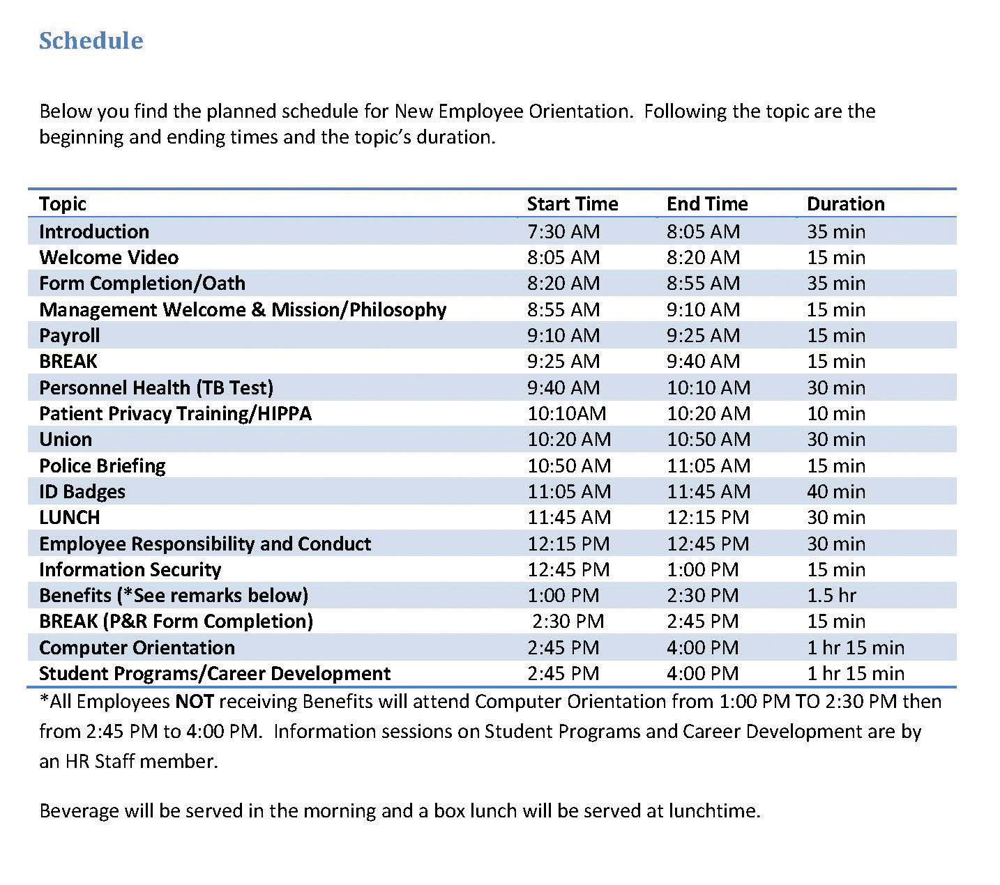
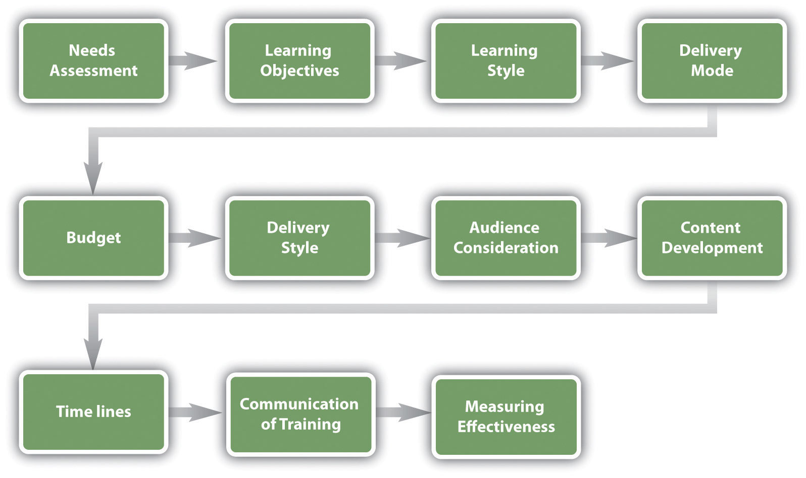
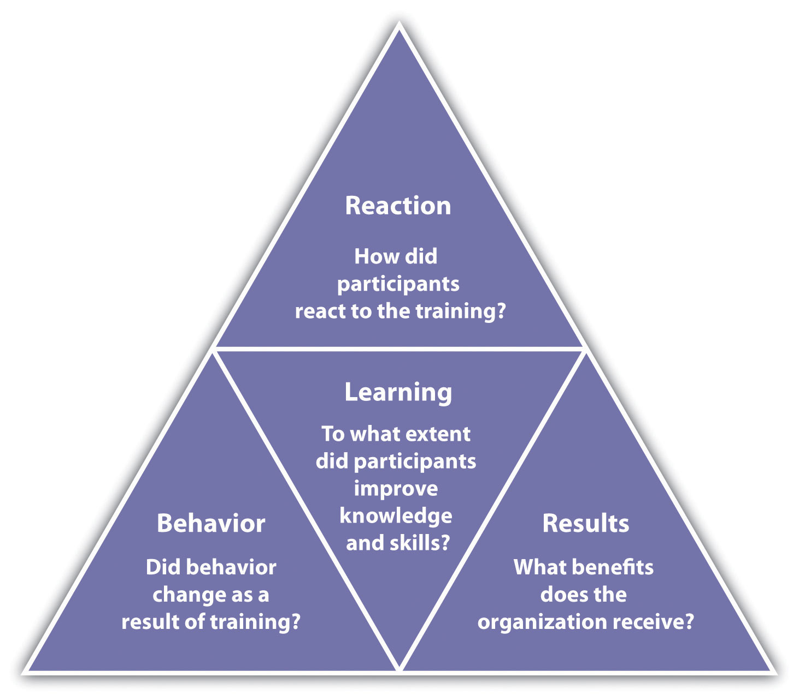
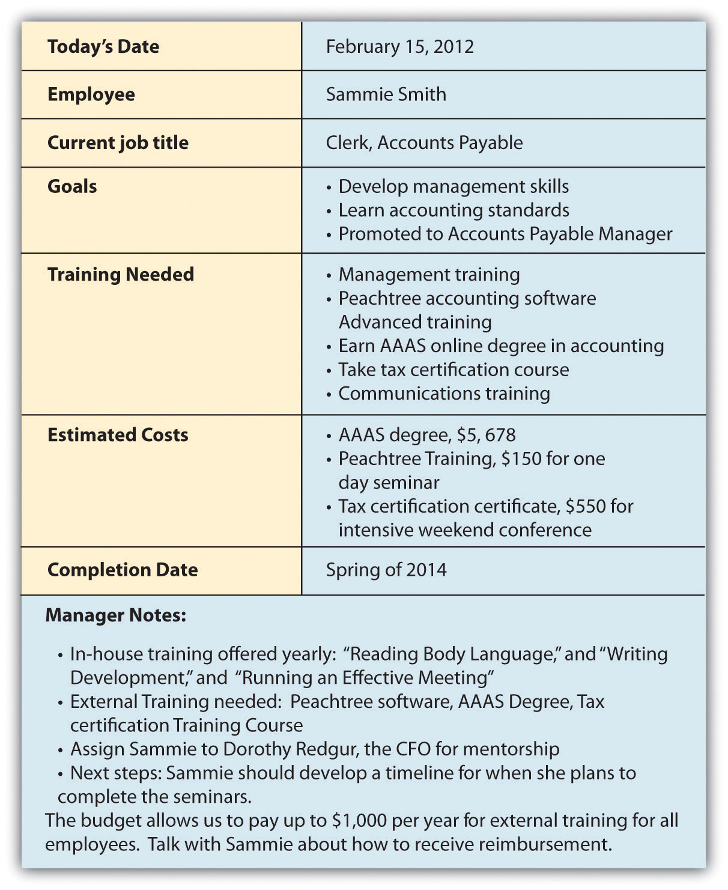
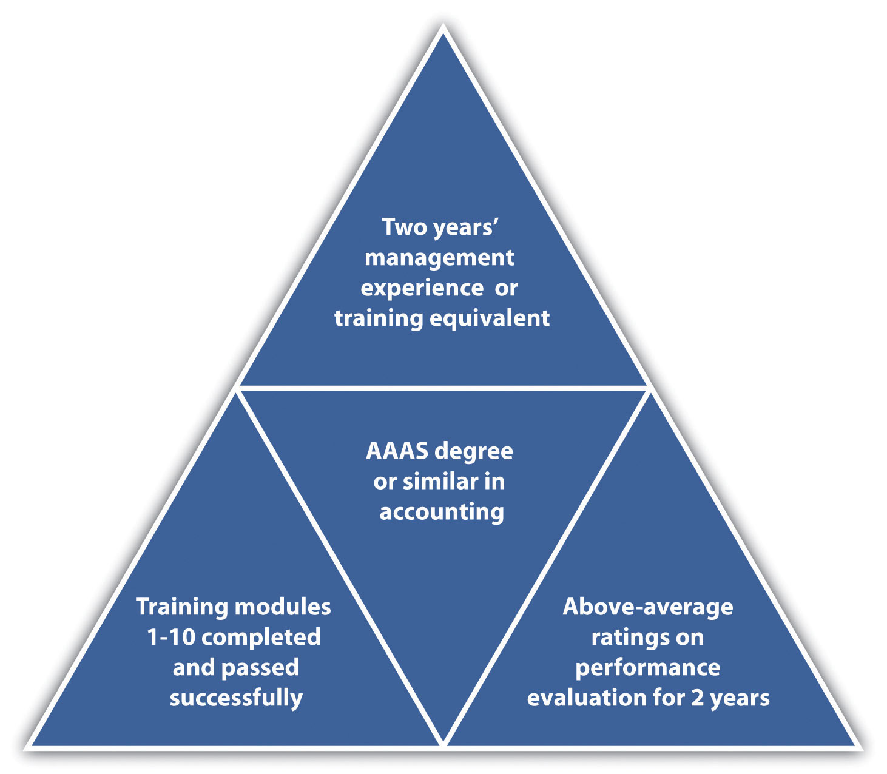
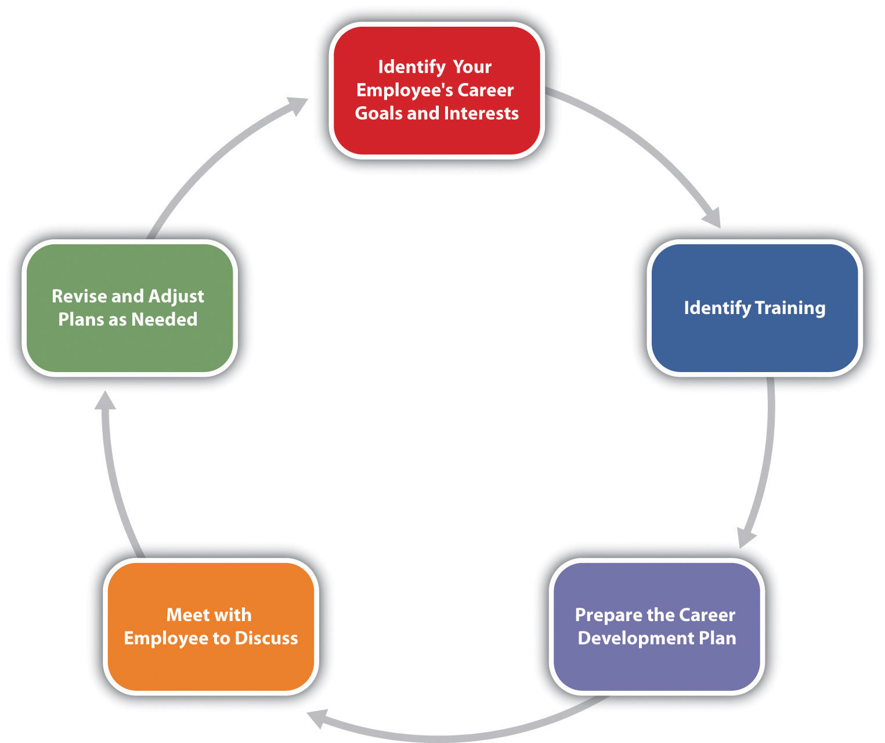

Imagine this: You have a pile of work on your desk and as you get started, your Outlook calendar reminds you about a sexual harassment training in ten minutes. You groan to yourself, not looking forward to sitting in a conference room and seeing PowerPoint slide after PowerPoint slide. As you walk to the conference room, you run into a colleague who is taking the same training that day and commiserate on how boring this training is probably going to be. When you step into the conference room, however, you see something very different.
Computers are set up at every chair with a video ready to start on the computer. The HR manager greets you and asks you to take a seat. When the training starts, you are introduced (via video) on each of the computers to a series of sexual harassment example scenarios. The videos stop, and there is a recorded discussion about what the videos portrayed. Your colleagues in the Washington, DC, office are able to see the same training and, via video conferencing, are able to participate in the discussions. It is highly interactive and interesting. Once the training is finished, there are assignments to be completed via specific channels that have been set up for this training. You communicate about the material and complete the assignments in teams with members of your Washington, DC, office. If you want to review the material, you simply click on a review and the entire session or parts of the training can be reviewed. In fact, on your bus ride home from work, you access the channels on your iPhone, chatting with a colleague in your other office about the sexual harassment training assignment you have due next week. You receive an e-mail from your HR manager asking you to complete a training assessment located in a specific channel in the software, and you happily comply because you have an entirely new perspective on what training can be.
This is the training of today. No longer do people sit in hot, stuffy rooms to get training on boring content. Training has become highly interactive, technical, and interesting owing to the amount of multimedia we can use. Sun Microsystems, for example, has developed just the kind of software mentioned above, called Social Learning eXchange (SLX). This type of training allows people across the country to connect with each other, saving both money and time. In fact, Sun Microsystems received a Best Practices Award from Training Magazine for this innovative software in 2010.“2010 Top 25 Winners,” Training Magazine, accessed July 25, 2010, http://www.trainingmag.com/article/2010-top-125-winners. The SLX software allows training to be delivered in an interactive manner in multiple locations. The implications of this type of software are numerous. For example, SLX is used at Sun Professional Services division by delivering instructional videos on tools and software, which employees can view at their own pace.“Video Community for the Enterprise,” Social Learning eXchange, accessed July 25, 2010, http://www.slideshare.net/sociallearningexchange/social-learning-exchange-slx?from=share_email. There is also a channel in the software that allows the vice president to communicate with employees on a regular basis to improve employee communications. In another example, this software can be used to quickly communicate product changes to the sales team, who then begin the process of positioning their products to consumers. Training videos, including breakout sessions, can save companies money by not requiring travel to a session. These can even be accessed using application technology on cell phones. Employees can obtain the training they need in the comfort of their own city, office, or home. Someone is sick the day the training is delivered? No problem; they can review the recorded training sessions.
An estimated $1,400 per employee is spent on training annually, with training costs consuming 2.72 percent of the total payroll budgetSee the American Society for Training and Development Trend Review, ASTD Website, accessed July 25, 2010, http://www.astd.org/. for the average company. With such a large amount of funds at stake, HR managers must develop the right training programs to meet the needs; otherwise, these funds are virtually wasted. This chapter is all about how to assess, develop, implement, and measure an effective training program.
The author introduces the chapter on training and development.
Any effective company has training in place to make sure employees can perform his or her job. During the recruitment and selection process, the right person should be hired to begin with. But even the right person may need training in how your company does things. Lack of training can result in lost productivity, lost customers, and poor relationships between employees and managers. It can also result in dissatisfaction, which means retention problems and high turnover. All these end up being direct costs to the organization. In fact, a study performed by the American Society for Training and Development (ASTD) found that 41 percent of employees at companies with poor training planned to leave within the year, but in companies with excellent training, only 12 percent planned to leave.Leigh Branham, The 7 Hidden Reasons Why Employees Leave (New York: American Management Association, 2005), 112–5. To reduce some costs associated with not training or undertraining, development of training programs can help with some of the risk. This is what this chapter will address.
For effective employee training, there are four steps that generally occur. First, the new employee goes through an orientation, and then he or she will receive in-house training on job-specific areas. Next, the employee should be assigned a mentor, and then, as comfort with the job duties grows, he or she may engage in external training. Employee training and developmentThe framework used to help employees develop their personal and organizational skills, knowledge, and abilities. is the process of helping employees develop their personal and organization skills, knowledge, and abilities.
The first step in training is an employee orientation. Employee orientationThe process used for welcoming a new employee into the organization. is the process used for welcoming a new employee into the organization. The importance of employee orientation is two-fold. First, the goal is for employees to gain an understanding of the company policies and learn how their specific job fits into the big picture. Employee orientation usually involves filling out employee paperwork such as I-9 and 401(k) program forms.
The goals of an orientation are as follows:
Some companies use employee orientation as a way to introduce employees not only to the company policies and procedures but also to the staff. For an example of an orientation schedule for the day, see Figure 8.1.
Figure 8.1
Some companies have very specific orientations, with a variety of people providing information to the new hires. This can create a welcoming environment, besides giving the employee the information they need. This is an example of one such orientation.
Source: Sample schedule courtesy of Louis Stokes Cleveland VA Medical Center, http://www.cleveland.va.gov/docs/NEOSchedule.pdf (accessed September 2, 2011).
Have you ever participated in an orientation? What was it like? What components did it have?
In-house training programsLearning opportunities developed by the organization in which they are used. are learning opportunities developed by the organization in which they are used. This is usually the second step in the training process and often is ongoing. In-house training programs can be training related to a specific job, such as how to use a particular kind of software. In a manufacturing setting, in-house training might include an employee learning how to use a particular kind of machinery.
Many companies provide in-house training on various HR topics as well, meaning it doesn’t always have to relate to a specific job. Some examples of in-house training include the following:
As you can tell by the list of topics, HR might sometimes create and deliver this training, but often a supervisor or manager delivers the training.
After the employee has completed orientation and in-house training, companies see the value in offering mentoring opportunities as the next step in training. Sometimes a mentor may be assigned during in-house training. A mentorA trusted and experienced advisor who has direct investment in the development of an employee. is a trusted, experienced advisor who has direct investment in the development of an employee. A mentor may be a supervisor, but often a mentor is a colleague who has the experience and personality to help guide someone through processes. While mentoring may occur informally, a mentorship program can help ensure the new employee not only feels welcomed but is paired up with someone who already knows the ropes and can help guide the new employee through any on-the-job challenges.
To work effectively, a mentoring program should become part of the company culture; in other words, new mentors should receive in-house training to be a mentor. Mentors are selected based on experience, willingness, and personality. IBM’s Integrated Supply Chain Division, for example, has successfully implemented a mentorship program. The company’s division boasts 19,000 employees and half of IBM’s revenues, making management of a mentorship program challenging. However, potential mentors are trained and put into a database where new employees can search attributes and strengths of mentors and choose the person who closely meets their needs. Then the mentor and mentee work together in development of the new employee. “We view this as a best practice,” says Patricia Lewis-Burton, vice president of human resources, Integrated Supply Chain Division. “We view it as something that is not left to human resources alone. In fact, the program is imbedded in the way our group does business.”Blyde Witt, “Serious Leadership: IBM Builds a Successful Mentoring Program,” Material Handling Management, December 1, 2005, accessed July 25, 2010, http://mhmonline.com/workforce-solutions/mhm_imp_4483/.
Some companies use short-term mentorship programs because they find employees training other employees to be valuable for all involved. Starbucks, for example, utilizes this approach. When it opens a new store in a new market, a team of experienced store managers and baristas are sent from existing stores to the new stores to lead the store-opening efforts, including training of new employees.Arthur Thompson, “Starbucks Corporation,” July 24, 2011, accessed July 29, 2011, http://www.mhhe.com/business/management/thompson/11e/case/starbucks-2.html.
External trainingAny type of training that is not performed in-house, such as seminars or conferences. includes any type of training that is not performed in-house. This is usually the last step in training, and it can be ongoing. It can include sending an employee to a seminar to help further develop leadership skills or helping pay tuition for an employee who wants to take a marketing class. To be a Ford automotive technician, for example, you must attend the Ford ASSET Program, which is a partnership between Ford Motor Company, Ford dealers, and select technical schools.“Automotive Technology/Ford ASSET Course,” Sheridan Technical Center, accessed July 29, 2011, http://www.sheridantechnical.com/Default.aspx?tabid=692.
To Train or Not to Train
Towanda Michaels is the human resource manager at a medium-size pet supply wholesaler. Casey Cleps is a salesperson at the organization and an invaluable member of the team. Last year, his sales brought in about 20 percent of the company revenue alone. Everybody likes Casey: he is friendly, competent, and professional.
Training is an important part of the company, and an e-mail was sent last month that said if employees do not complete the required safety training by July 1, they would be let go.
It is July 15, and it has just come to Towanda’s attention that Casey has not completed the online safety training that is required for his job. When she approaches him about it, he says, “I am the best salesperson here; I can’t waste time doing training. I already know all the safety rules anyway.”
Would you let Casey go, as stated in the e-mail? How would you handle this?
How Would You Handle This?
https://api.wistia.com/v1/medias/1348781/embedThe author discusses the How Would You Handle This situation in this chapter at: https://api.wistia.com/v1/medias/1348781/embed.
There are a number of different types of training we can use to engage an employee. These types are usually used in all steps in a training process (orientation, in-house, mentorship, and external training). The training utilized depends on the amount of resources available for training, the type of company, and the priority the company places on training. Companies such as The Cheesecake Factory, a family restaurant, make training a high priority. The company spends an average of $2,000 per hourly employee. This includes everyone from the dishwasher and managers to the servers. For The Cheesecake Factory, this expenditure has paid off. They measure the effectiveness of its training by looking at turnover, which is 15 percent below the industry average.Gina Ruiz, “Cheesecake Factory Cooks Up a Rigorous Employee Training Program,” Workforce Management, April 24, 2006, accessed July 25, 2010, http://www.workforce.com/section/11/feature/24/35/18/. Servers make up 40 percent of the workforce and spend two weeks training to obtain certification. Thirty days later, they receive follow-up classes, and when the menu changes, they receive additional training.Gina Ruiz, “Cheesecake Factory Cooks Up a Rigorous Employee Training Program,” Workforce Management, April 24, 2006, accessed July 25, 2010, http://www.workforce.com/section/11/feature/24/35/18/. Let’s take a look at some of the training we can offer our employees.
As you will see from the types of training below, no one type would be enough for the jobs we do. Most HR managers use a variety of these types of training to develop a holistic employee.
Depending on the type of job, technical training will be required. Technical trainingA type of training meant to teach new employees the technological aspects of their job. is a type of training meant to teach the new employee the technological aspects of the job. In a retail environment, technical training might include teaching someone how to use the computer system to ring up customers. In a sales position, it might include showing someone how to use the customer relationship management (CRM) system to find new prospects. In a consulting business, technical training might be used so the consultant knows how to use the system to input the number of hours that should be charged to a client. In a restaurant, the server needs to be trained on how to use the system to process orders. Let’s assume your company has decided to switch to the newest version of Microsoft Office. This might require some technical training of the entire company to ensure everyone uses the technology effectively. Technical training is often performed in-house, but it can also be administrered externally.
In a production-focused business, quality training is extremely important. Quality trainingRefers to familiarizing all employees with the means for preventing, detecting, and eliminating nonquality items. refers to familiarizing employees with the means of preventing, detecting, and eliminating nonquality items, usually in an organization that produces a product. In a world where quality can set your business apart from competitors, this type of training provides employees with the knowledge to recognize products that are not up to quality standards and teaches them what to do in this scenario. Numerous organizations, such as the International Organization for Standardization (ISO), measure quality based on a number of metrics. This organization provides the stamp of quality approval for companies producing tangible products. ISO has developed quality standards for almost every field imaginable, not only considering product quality but also certifying companies in environmental management quality. ISO9000The set of standards for quality management. is the set of standards for quality management, while ISO14000The set of standards for environmental management. is the set of standards for environmental management. ISO has developed 18,000 standards over the last 60 years.“The ISO Story,” International Organization for Standards, accessed July 26, 2010, http://www.iso.org/iso/about/the_iso_story/iso_story_early_years.htm. With the increase in globalization, these international quality standards are more important than ever for business development. Some companies, like 3M,QAI website, accessed July 30, 2011, http://www.trainingforquality.com/Content.aspx?id=26. choose to offer ISO training as external online training, employing companies such as QAI to deliver the training both online and in classrooms to employees.
Training employees on quality standards, including ISO standards, can give them a competitive advantage. It can result in cost savings in production as well as provide an edge in marketing of the quality-controlled products. Some quality training can happen in-house, but organizations such as ISO also perform external training.
Skills trainingIncludes training on proficiencies needed to actually perform the job., the third type of training, includes proficiencies needed to actually perform the job. For example, an administrative assistant might be trained in how to answer the phone, while a salesperson at Best Buy might be trained in assessment of customer needs and on how to offer the customer information to make a buying decision. Think of skills training as the things you actually need to know to perform your job. A cashier needs to know not only the technology to ring someone up but what to do if something is priced wrong. Most of the time, skills training is given in-house and can include the use of a mentor. An example of a type of skills training is from AT&T and Apple,Lance Whitney, “Apple, AT&T Reportedly Prepping Staff for iPhone 5 Launch,” CNET, July 26, 2011, accessed July 29, 2011, http://news.cnet.com/8301-13579_3-20083435-37/apple-at-t-reportedly-prepping-staff-for-iphone-5-launch/. who in summer 2011 asked their managers to accelerate retail employee training on the iPhone 5, which was released to market in the fall.
A small business owner explains the advantages of offering informal skills training about new products.
Our fourth type of training is called soft skills training. Soft skillsPersonality traits, social graces, communication, and personal habits that are used to characterize relationships with other people. refer to personality traits, social graces, communication, and personal habits that are used to characterize relationships with other people. Soft skills might include how to answer the phone or how to be friendly and welcoming to customers. It could include sexual harassment training and ethics training. In some jobs, necessary soft skills might include how to motivate others, maintain small talk, and establish rapport.
In a retail or restaurant environment, soft skills are used in every interaction with customers and are a key component of the customer experience. In fact, according to a Computerworld magazine survey, executives say there is an increasing need for people who have not only the skills and technical skills to do a job but also the necessary soft skills, such as strong listening and communication abilities.Thomas Hoffman, “Nine Nontechie Skills That Hiring Managers Wish You Had,” Computerworld, November 12, 2007, accessed July 26, 2010, http://www.computerworld.com/s/article/305966/Are_You_the_Complete_Package_. Many problems in organizations are due to a lack of soft skills, or interpersonal skills, not by problems with the business itself. As a result, HR and managers should work together to strengthen these employee skills. Soft skills training can be administered either in-house or externally.
In some jobs, professional training must be done on an ongoing basis. Professional trainingA type of training that keeps an employee up to date in one’s professional field. is a type of training required to be up to date in one’s own professional field. For example, tax laws change often, and as a result, an accountant for H&R Block must receive yearly professional training on new tax codes.Jeannine Silkey, “Tax Preparer Certifications,” Suite 101, January 28, 2010, accessed July 26, 2010, http://personal-tax-planning.suite101.com/article.cfm/tax-preparer-certifications. Lawyers need professional training as laws change. A personal fitness trainer will undergo yearly certifications to stay up to date in new fitness and nutrition information.
Some organizations have paid a high cost for not properly training their employees on the laws relating to their industry. In 2011, Massachusetts General Hospital paid over $1 million in fines related to privacy policies that were not followed.Julie Donnelly, “Mass. General to Pay $1M to Settle Privacy Claims,” Boston Business Journal, February 24, 1011, accessed February 26, 2011, http://www.bizjournals.com/boston/news/2011/02/24/mass-general-to-pay-1m-to-settle.html. As a result, the organization has agreed to develop training for workers on medical privacy. The fines could have been prevented if the organization had provided the proper training to begin with. Other types of legal training might include sexual harassment law training and discrimination law training.
Do you know the exercise in which a person is asked to close his or her eyes and fall back, and then supposedly the team members will catch that person? As a team-building exercise (and a scary one at that), this is an example of team training. The goal of team training is to develop cohesiveness among team members, allowing them to get to know each other and facilitate relationship building. We can define team trainingA process that empowers teams to improve decision making, problem solving, and team-development skills to achieve business results. as a process that empowers teams to improve decision making, problem solving, and team-development skills to achieve business results. Often this type of training can occur after an organization has been restructured and new people are working together or perhaps after a merger or acquisition. Some reasons for team training include the following:
Team training can be administered either in-house or externally. Ironically, through the use of technology, team training no longer requires people to even be in the same room.
What kind of team training have you participated in? What was it like? Do you think it accomplished what it was supposed to accomplish?
After someone has spent time with an organization, they might be identified as a candidate for promotion. When this occurs, managerial trainingThe type of training that occurs when someone has been identified as a good manager candidate. Could include soft skills training, technical training, and skills training. would occur. Topics might include those from our soft skills section, such as how to motivate and delegate, while others may be technical in nature. For example, if management uses a particular computer system for scheduling, the manager candidate might be technically trained. Some managerial training might be performed in-house while other training, such as leadership skills, might be performed externally.
For example, Mastek, a global IT solutions and services provider, provides a program called “One Skill a Month,” which enables managers to learn skills such as delegation, coaching, and giving feedback. The average number of total training days at Mastek is 7.8 per employeeMastek website, accessed July 30, 2011, http://www.mastek.com/careers/learning-development.html. and includes managerial topics and soft skills topics such as e-mail etiquette. The goal of its training programs is to increase productivity, one of the organization’s core values.
Safety trainingTraining employees so they are protected from injuries caused by work-related accidents. is a type of training that occurs to ensure employees are protected from injuries caused by work-related accidents. Safety training is especially important for organizations that use chemicals or other types of hazardous materials in their production. Safety training can also include evacuation plans, fire drills, and workplace violence procedures. Safety training can also include the following:
The Occupational Safety and Health AdministrationThe main federal agency charged with enforcement of safety and health regulation in the United States., or OSHA, is the main federal agency charged with enforcement of safety and health regulation in the United States. OSHA provides external training to companies on OSHA standards. Sometimes in-house training will also cover safety training.
This is a short video Starbucks uses to train new employees on customer service.
Please view this video at http://www.youtube.com/watch?v=OAmftgYEWqU.
Depending on the type of training occurring, you may choose one delivery method over another. This section discusses the types of delivery methods we can use to execute the types of training. Keep in mind, however, that most good training programs will use a variety of delivery methods.
This excellent training video was used at Wendy’s to teach employees how to grill the perfect burger. Although the video is over twenty years old, the concepts used in it are still true today.
On-the-job coaching is one way to facilitate employee skills training. On-the-job coachingRefers to the training of an employee by an approved person to learn the skills necessary to complete the tasks. refers to an approved person training an employee on the skills necessary to complete tasks. A manager or someone with experience shows the employee how to perform the actual job. The selection of an on-the-job coach can be done in a variety of ways, but usually the coach is selected based on personality, skills, and knowledge. This type of skills training is normally facilitated in-house. The disadvantage of this training revolves around the person delivering the training. If he or she is not a good communicator, the training may not work. Likewise, if this person has “other things to do,” he or she may not spend as much time required to train the person and provide guidance. In this situation, training can frustrate the new employee and may result in turnover.
Mentoring is also a type of training delivery. A mentor is a trusted, experienced advisor who has direct investment in the development of an employee. MentoringA process by which an employee can be trained and developed, through use of an experienced person. is a process by which an employee can be trained and developed by an experienced person. Normally, mentoring is used as a continuing method to train and develop an employee. One disadvantage of this type of training is possible communication style and personality conflict. It can also create overdependence in the mentee or micromanagement by the mentor. This is more different than on-the-job coaching, which tends to be short term and focuses on the skills needed to perform a particular job.
Brown bag lunches are a training delivery method meant to create an informal atmosphere. As the name suggests, brown bag lunch trainingTraining occurs during lunchtime, employees bring their lunch, and someone presents training information to them. is one in which the training occurs during lunchtime, employees bring their food, and someone presents training information to them. The trainer could be HR or management or even another employee showing a new technical skill. Brown bag lunches can also be an effective way to perform team training, as it brings people together in a more relaxed atmosphere. Some companies offer brown bag lunch training for personal development as well. For example, HR might want to bring in a specialist on 401(k) plans, or perhaps an employee provides a slide presentation on a trip he or she has taken, discussing the things learned on the trip. One disadvantage to this type of training can be low attendance and garnering enough interest from employees who may not want to “work” during lunch breaks. There can also be inconsistency in messages if training is delivered and not everyone is present to hear the message.
What types of brown bag lunch training would employees be most willing to attend? Do you think this type of training should be required?
Web-based training delivery has a number of names. It could be called e-learning or Internet-based, computer-based, or technology-based learning. No matter what it is called, any web-based trainingInvolves the use of technology to facilitate training. involves the use of technology to facilitate training. There are two types of web-based learning. First, synchronousA web-based training delivery method in which the delivery uses instructor-led facilitation. learning uses instructor-led facilitation. AsynchronousA web-based training delivery method in which the delivery is self-directed. learning is self-directed, and there is no instructor facilitating the course. There are several advantages to web-based training. First, it is available on demand, does not require travel, and can be cost efficient. However, disadvantages might include an impersonal aspect to the training and limited bandwidth or technology capabilities.“Advantages and Disadvantages,” Web Based Training Information Center, accessed July 27, 2010, http://www.webbasedtraining.com/primer_advdis.aspx.
Web-based training delivery lends itself well to certain training topics. For example, this might be an appropriate delivery method for safety training, technical training, quality training, and professional training. However, for some training, such as soft-skills training, job skills training, managerial training, and team training, another more personalized method may be better for delivery. However, there are many different platforms that lend themselves to an interactive approach to training, such as Sun Microsystems’ Social Learning eXchange (SLX) training system, which has real-time video and recording capabilities. Hundreds of platforms are available to facilitate web-based training. DigitalChalk, for example, allows for both synchronous and asynchronous training and allows the instructor or human relations manager to track training progress and completion.DigitalChalk website, accessed August 12, 2010, http://www.digitalchalk.com/. Some companies use SharePoint, an intranet platform, to store training videos and materials.Microsoft’s SharePoint website, accessed August 12, 2010, http://sharepoint.microsoft.com/en-us/Pages/default.aspx. Blackboard and Angel (used primarily by higher education institutions) allows human resource managers to create training modules, which can be moderated by a facilitator or managed in a self-paced format. In any of the platforms available, media such as video and podcasts can be included within the training.
Considerations for selecting a web-based platform include the following:
Job shadowingA training delivery method that places an employee who already has the skills with another employee who wants to develop those skills. is a training delivery method that places an employee who already has the skills with another employee who wants to develop those skills. Apprenticeships use job shadowing as one type of training method. For example, an apprentice electrician would shadow and watch the journeyman electrician perform the skills and tasks and learn by watching. Eventually, the apprentice would be able to learn the skills to do the job alone. The downside to this type of training is the possibility that the person job shadowing may learn “bad habits” or shortcuts to performing tasks that may not be beneficial to the organization.
It takes a lot of training for the Walt Disney Company to produce the best Mickey Mouse, Snow White, Aladdin, or Peter Pan. In Orlando at Disneyworld, most of this training takes place at Disney University. Disney University provides training to its 42,000 cast members (this is what Disney calls employees) in areas such as culinary arts, computer applications, and specific job components. Once hired, all cast members go through a two-day Disney training program called Traditions, where they learn the basics of being a good cast member and the history of the company. For all practical purposes, Traditions is a new employee orientation.
Training doesn’t stop at orientation, though. While all positions receive extensive training, one of the most extensive trainings are especially for Disney characters, since their presence at the theme parks is a major part of the customer experience. To become a character cast member, a character performer audition is required. The auditions require dancing and acting, and once hired, the individual is given the job of several characters to play. After a two-week intensive training process on character history, personalities, and ability to sign the names of the characters (for the autograph books sold at the parks for kids), an exam is given. The exam tests competency in character understanding, and passing the exam is required to become hired.Jim Hill, “Blood, Sweat, and Fur,” Jim Hill Media, May 2005, accessed July 30, 2011, http://jimhillmedia.com/guest_writers1/b/rob_bloom/archive/2005/05/03/1703.aspx.
While Disney University trains people for specific positions, it also offers an array of continuing development courses called Disney Development Connection. Disney says in 2010, more than 3,254,596 hours were spent training a variety of employees,“Training and Development,” Disney, accessed July 30, 2011, http://corporate.disney.go.com/citizenship2010/disneyworkplaces/overview/traininganddevelopment/. from characters to management. The training doesn’t stop at in-house training, either. Disney offers tuition reimbursement up to $700 per credit and pays for 100 percent of books and $100 per course for cost of other materials. In 2010, Disney paid over $8 million in tuition expenses for cast members.“Training and Development,” Disney, accessed July 30, 2011, http://corporate.disney.go.com/citizenship2010/disneyworkplaces/overview/traininganddevelopment/.
Disney consistently ranks in “America’s Most Admired Companies” by Fortune Magazine, and its excellent training could be one of the many reasons.
Job swappingA method for training in which two employees agree to change jobs for a period of time. is a method for training in which two employees agree to change jobs for a period of time. Of course, with this training delivery method, other training would be necessary to ensure the employee learns the skills needed to perform the skills of the new job. Job swap options can be motivational to employees by providing a change of scenery. It can be great for the organization as well to cross-train employees in different types of jobs. However, the time spent learning can result in unproductive time and lost revenue.
In vestibule trainingTraining is performed near-site in conference rooms, lecture rooms, and classrooms., training is performed near the worksite in conference rooms, lecture rooms, and classrooms. This might be an appropriate method to deliver orientations and some skills-based training. For example, to become a journeyman electrician, an apprentice performs job shadowing, on-the-job training, and vestibule training to learn the law and codes related to electricity installation. During the busy holiday season, Macy’s uses vestibule training to teach new hires how to use the cash register system and provides skills training on how to provide great customer service.Macy’s website, accessed July 27, 2010, http://www.macysjobs.com/about/.
Many organizations use vestibule training for technical training, safety training, professional training, and quality training. It can also be appropriate for managerial training, soft skills training, and team training. As you can tell, this delivery method, like web-based training delivery, is quite versatile. For some jobs or training topics, this may take too much time away from performing the actual “job,” which can result in lost productivity.
Since we are working within a global economy, it might be necessary to provide training to employees who are moving overseas or working overseas. Up to 40 percent of international assignments are terminated early because of a lack of international training.Sherry E. Sullivan and Howard Tu, “Preparing Yourself for an International Assignment,” Bnet, accessed September 15, 2011, http://findarticles.com/p/articles/mi_m1038/is_n1_v37/ai_14922926/. Ensuring success overseas is reliant upon the local employee’s learning how to navigate in the new country. The following topics might be included in this type of training:
This training is best delivered by a professional in the region or area in which the employee will be working. We discuss this topic in more detail in Chapter 14 "International HRM".
The next step in the training process is to create a training framework that will help guide you as you set up a training program. Information on how to use the framework is included in this section.
When developing your training plan, there are a number of considerations. Training is something that should be planned and developed in advance.
Figure 8.6 Training Program Development Model
The considerations for developing a training program are as follows:
Can you think of a time where you received training, but the facilitator did not connect with the audience? Does that ever happen in any of your classes (of course not this one, though)?
The first step in developing a training program is to determine what the organization needs in terms of training. There are three levels of training needs assessment: organizational assessmentA type of needs assessment that allows us to determine the skills, knowledge, and abilities a company needs to meet its strategic objectives., occupational (task) assessmentA type of needs assessment that looks at the specific tasks, skills knowledge, and abilities required to do jobs within the organization., and individual assessmentA type of needs assessment that looks at the performance of an individual employee and determines what training should be accomplished for that individual.:
We can apply each of these to our training plan. First, to perform an organizational assessment, we can look at future trends and our overall company’s strategic plan to determine training needs. We can also see how jobs and industries are changing, and knowing this, we can better determine the occupational and individual assessments.
Researching training needs can be done through a variety of ways. One option is to use an online tool such as SurveyMonkey to poll employees on what types of training they would like to see offered.
As you review performance evaluations turned in by your managers, you may see a pattern developing showing that employees are not meeting expectations. As a result, this may provide data as to where your training is lacking.
There are also types of training that will likely be required for a job, such as technical training, safety training, quality training, and professional training. Each of these should be viewed as separate training programs, requiring an individual framework for each type of training. For example, an employee orientation framework will look entirely different from an in-house technical training framework.
Training must be tied to job expectations. Any and all training developed should transfer directly to the skills of that particular employee. Reviewing the HR strategic plan and various job analyses may help you see what kind of training should be developed for specific job titles in your organization.
After you have determined what type of training should occur, learning objectives for the training should be set. A learning objectiveSomething you want your learners to know after the training. is what you want the learner to be able to do, explain, or demonstrate at the end of the training period. Good learning objectives are performance based and clear, and the end result of the learning objective can be observable or measured in some way. Examples of learning objectives might include the following:
Once we have set our learning objectives, we can utilize information on learning styles to then determine the best delivery mode for our training.
Understanding learning styles is an important component to any training program. For our purposes, we will utilize a widely accepted learning style model. Recent research has shown that classifying people into learning styles may not be the best way to determine a style, and most people have a different style depending on the information being taught. In a study by Pashler et al.,Harold Pashler, Mark McDaniel, Doug Rohrer, and Robert Bjork, “Learning Styles: Concepts and Evidence,” Psychological Science in the Public Interest 9, no. 3 (2008): 109–19, accessed February 26, 2011, http://www.psychologicalscience.org/journals/pspi/PSPI_9_3.pdf. the authors look at aptitude and personality as key traits when learning, as opposed to classifying people into categories of learning styles. Bearing this in mind, we will address a common approach to learning styles next.
An effective trainer tries to develop training to meet the three different learning styles:“What’s YOUR Learning Style?” adapted from Instructor Magazine, University of South Dakota, August 1989, accessed July 28, 2010, http://people.usd.edu/~bwjames/tut/learning-style/.
Most individuals use more than one type of learning style, depending on what kinds of information they are processing. For example, in class you might be a visual learner, but when learning how to change a tire, you might be a kinesthetic learner.
Depending on the type of training that needs to be delivered, you will likely choose a different mode to deliver the training. An orientation might lend itself best to vestibule training, while sexual harassment training may be better for web-based training. When choosing a delivery mode, it is important to consider the audience and budget constrictions. For example, Oakwood Worldwide, a provider of temporary housing, recently won the Top 125 Training Award for its training and development programs.“Oakwood Worldwide Honored by Training Magazine for Fifth Consecutive Year Training also Presents Oakwood with Best Practice Award,” press release, February 25, 2011, Marketwire, accessed February 26, 2011, http://www.live-pr.com/en/oakwood-worldwide-honored-by-training-magazine-r1048761409.htm. It offers in-class and online classes for all associates and constantly add to its course catalog. This is a major recruitment as well as retention tool for its employees. In fact, the company credits this program for retaining 25 percent of its workforce for ten years or more. Table 8.1 "Types of Training and Delivery" looks at each of the types of training and suggests appropriate options for delivery modes.
Table 8.1 Types of Training and Delivery
| Delivery Method | Type of Training Suggested |
|---|---|
| On-the-job coaching | Technical training |
| Skills training | |
| Managerial training | |
| Safety training | |
| Mentor | Technical training |
| Skills training | |
| Managerial training | |
| Safety training | |
| Brown bag lunch | Quality training |
| Soft skills training | |
| Professional training | |
| Safety training | |
| Web-based | Technical training |
| Quality training | |
| Skills training | |
| Soft skills training | |
| Professional training | |
| Team training | |
| Managerial training | |
| Safety training | |
| Job shadowing | Technical training |
| Quality training | |
| Skills training | |
| Safety training | |
| Job swapping | Technical training |
| Quality training | |
| Skills training | |
| Professional training | |
| Team training | |
| Managerial training | |
| Safety training | |
| Vestibule training | Technical training |
| Quality training | |
| Skills training | |
| Soft skills training | |
| Professional training | |
| Team training | |
| Managerial training | |
| Safety training |
How much money do you think the training will cost? The type of training performed will depend greatly on the budget. If you decide that web-based training is the right delivery mode, but you don’t have the budget to pay the user fee for the platform, this wouldn’t be the best option. Besides the actual cost of training, another cost consideration is people’s time. If employees are in training for two hours, what is the cost to the organization while they are not able to perform their job? A spreadsheet should be developed that lists the actual cost for materials, snacks, and other direct costs, but also the indirect costs, such as people’s time.
Taking into consideration the delivery method, what is the best style to deliver this training? It’s also important to keep in mind that most people don’t learn through “death by PowerPoint”; they learn in a variety of ways, such as auditory, kinesthetic, or visual. Considering this, what kinds of ice breakers, breakout discussions, and activities can you incorporate to make the training as interactive as possible? Role plays and other games can make the training fun for employees. Many trainers implement online videos, podcasts, and other interactive media in their training sessions. This ensures different learning styles are met and also makes the training more interesting.
Considering your audience is an important aspect to training. How long have they been with the organization, or are they new employees? What departments do they work in? Knowing the answers to these questions can help you develop a relevant delivery style that makes for better training. For example, if you know that all the people attending the training are from the accounting department, examples you provide in the training can be focused on this type of job. If you have a mixed group, examples and discussions can touch on a variety of disciplines.
The content you want to deliver is perhaps one of the most important parts in training and one of the most time-consuming to develop. Development of learning objectives or those things you want your learners to know after the training makes for a more focused training. Think of learning objectives as goals—what should someone know after completing this training? Here are some sample learning objectives:
After you have developed the objectives and goals, you can begin to develop the content of the training. Consideration of the learning methods you will use, such as discussion and role playing, will be outlined in your content area.
Development of content usually requires a development of learning objectives and then a brief outline of the major topics you wish to cover. With that outline, you can “fill in” the major topics with information. Based on this information, you can develop modules or PowerPoint slides, activities, discussion questions, and other learning techniques.
For some types of training, time lines may be required to ensure the training has been done. This is often the case for safety training; usually the training should be done before the employee starts. In other words, in what time frame should an employee complete the training?
Another consideration regarding time lines is how much time you think you need to give the training. Perhaps one hour will be enough, but sometimes, training may take a day or even a week. After you have developed your training content, you will likely have a good idea as to how long it will take to deliver it. Consider the fact that most people do not have a lot of time for training and keep the training time realistic and concise.
From a long-term approach, it may not be cost effective to offer an orientation each time someone new is hired. One consideration might be to offer orientation training once per month so that all employees hired within that month are trained at the same time.
Development of a dependable schedule for training might be ideal, as in the following example:
Developing a dependable training schedule allows for better communication to your staff, results in fewer communication issues surrounding training, and allows all employees to plan ahead to attend training.
Once you have developed your training, your next consideration is how you will communicate the available training to employees. In a situation such as an orientation, you will need to communicate to managers, staff, and anyone involved in the training the timing and confirm that it fits within their schedule. If it is an informal training, such as a brown bag lunch on 401(k) plans, this might involve determining the days and times that most people are in the office and might be able to participate. Because employees use Mondays and Fridays, respectively, to catch up and finish up work for the week, these days tend to be the worst for training.
Consider utilizing your company’s intranet, e-mail, and even old-fashioned posters to communicate the training. Many companies have Listservs that can relay the message to only certain groups, if need be.
What can happen if training is not communicated to employees appropriately?
After we have completed the training, we want to make sure our training objectives were met. One model to measure effectiveness of training is the Kirkpatrick model,Donald Kirkpatrick, Evaluating Training Programs, 3rd ed. (San Francisco: Berrett-Koehler, 2006). developed in the 1950s. His model has four levels:
Each of Kirkpatrick’s levels can be assessed using a variety of methods. We will discuss those next.
Figure 8.7 Kirkpatrick’s Four Levels of Training Evaluation
Review the performance of the employees who received the training, and if possible review the performance of those who did not receive the training. For example, in your orientation training, if one of the learning objectives was to be able to request time off using the company intranet, and several employees who attended the training come back and ask for clarification on how to perform this task, it may mean the training didn’t work as well as you might have thought. In this case, it is important to go back and review the learning objectives and content of your training to ensure it can be more effective in the future.
Many trainers also ask people to take informal, anonymous surveys after the training to gauge the training. These types of surveys can be developed quickly and easily through websites such as SurveyMonkey. Another option is to require a quiz at the end of the training to see how well the employees understand what you were trying to teach them. The quiz should be developed based on the learning objective you set for the training. For example, if a learning objective was to be able to follow OSHA standards, then a quiz might be developed specifically related to those standards. There are a number of online tools, some free, to develop quizzes and send them to people attending your training. For example, Wondershare QuizCreatorWonderShare QuizCreator, accessed July 29, 2010, http://www.sameshow.com/quiz-creator.html#172. offers a free trial and enables the manager to track who took the quiz and how well they did. Once developed by the trainer, the quiz can be e-mailed to each participant and the manager can see how each trainee did on the final quiz. After you see how participants do on the quiz, you can modify the training for next time to highlight areas where participants needed improvement.
It can be easy to forget about this step in the training process because usually we are so involved with the next task: we forget to ask questions about how something went and then take steps to improve it.
One way to improve effectiveness of a training program is to offer rewards when employees meet training goals. For example, if budget allows, a person might receive a pay increase or other reward for each level of training completed.
Figure 8.8

Once the training framework has been developed, the training content can be developed. The training plan serves as a starting point for training development.
Another important aspect to training is career development programs. A career development programA process developed to help people manage their career, learn new things, and take steps to improve personally and professionally. is a process developed to help people manage their career, learn new things, and take steps to improve personally and professionally. Think of it as a training program of sorts, but for individuals. Sometimes career development programs are called professional development plans.
Figure 8.9 Sample Career Development Plan Developed by an Employee and Commented on by Her Manager
As you can see, the employee developed goals and made suggestions on the types of training that could help her meet her goals. Based on this data, the manager suggested in-house training and external training for her to reach her goals within the organization.
Career development programs are necessary in today’s organizations for a variety of reasons. First, with a maturing baby-boom population, newer employees must be trained to take those jobs once baby boomers retire. Second, if an employee knows a particular path to career development is in place, this can increase motivation. A career development plan usually includes a list of short- and long-term goals that employees have pertaining to their current and future jobs and a planned sequence of formal and informal training and experiences needed to help them reach the goals. As this chapter has discussed, the organization can and should be instrumental in defining what types of training, both in-house and external, can be used to help develop employees.
To help develop this type of program, managers can consider a few components:Martha Heller, “Six Tips for Effective Employee Development Programs,” CIO Magazine, June 15, 2005, accessed July 28, 2010, http://www.cio.com/article/29169/Six_Tips_for_Effective_Career_Development_Programs.
Figure 8.10 Career Development Sample Process to Become an Accounts Payable Manager
There are many tools on the web, including templates to help employees develop their own career development plans. Many organizations, in fact, ask employees to develop their own plans and use those as a starting point for understanding long-term career goals. Then hopefully the organization can provide them with the opportunities to meet these career goals. In the late 1980s, many employees felt that career opportunities at their current organizations dwindled after seeing the downsizing that occurred. It gave employees the feeling that companies were not going to help develop them, unless they took the initiative to do so themselves. Unfortunately, this attitude means that workers will not wait for career opportunities within the company, unless a clear plan and guide is put into place by the company.Peter Capelli, “A Balanced Plan for Career Development,” n.d., Microsoft, accessed July 29, 2010, http://office.microsoft.com/en-us/word-help/a-balanced-plan-for-career-development-HA001126815.aspx. Here is an example of a process that can be used to put a career development program in place:Jose Trueba Adolfo, “The Career Development Plan: A Quick Guide for Managers and Supervisors,” n.d., National Career Development Association, accessed July 29, 2010, http://associationdatabase.com/aws/NCDA/pt/sd/news_article/6420/_PARENT/layout_details/false.
Identifying and developing a planning process not only helps the employee but also can assist the managers in supporting employees in gaining new skills, adding value, and motivating employees.
Figure 8.11 Career Development Planning Process
Summary
The author provides a video summary of the chapter.
New on the Job
JoAnn Michaels just started her job as human resources manager at In the Dog House, a retail chain specializing in dog apparel and accessories. She is a good friend of yours you met in college.
The organization has 35 stores with 250 employees in Washington, Idaho, and Oregon. As the chain has grown, the training programs have been conducted somewhat piecemeal. Upon visiting some of the stores in a three-week tour, JoAnn has realized that all the stores seem to have different ways of training their in-store employees.
When she digs further, she realizes even the corporate offices, which employ seventy-five people, have no formal training program. In the past, they have done informal and optional brown bag lunch training to keep employees up to date. As a result, JoAnn develops a survey using SurveyMonkey and sends it to all seventy-five corporate employees. She created a rating system, with 1 meaning strongly disagree and 5 meaning strongly agree. Employees were not required to answer all questions, hence the variation in the number of responses column. After this task, JoAnn creates a slightly different survey and sends it to all store managers, asking them to encourage their retail employees to take the survey. The results are shown here.
| In the Dog House Corporate Employee Survey Results | ||
|---|---|---|
| Question | Number of Responses | Average Rating |
| I am paid fairly. | 73 | 3.9 |
| I feel my group works well as a team. | 69 | 2.63 |
| I appreciate the amount of soft skills training offered at In the Dog House. | 74 | 2.1 |
| I can see myself growing professionally here. | 69 | 1.95 |
| I feel I am paid fairly. | 74 | 3.8 |
| I have all the tools and equipment I need to do my job. | 67 | 4.2 |
| I feel confident if there were an emergency at the office, I would know what to do and could help others. | 73 | 2.67 |
| I think my direct supervisor is an excellent manager. | 55 | 2.41 |
| The orientation training I received was helpful in understanding the expectations of the job. | 75 | 3.1 |
| I would take training related to my job knowing there would be a reward offered for doing so. | 71 | 4.24 |
| In the Dog House Retail Employee Survey Results | ||
|---|---|---|
| Question | Number of Responses | Average Rating |
| I am content with the benefits I am receiving. | 143 | 1.2 |
| I feel my store works well as a team. | 190 | 4.1 |
| I appreciate the amount of product training and information offered at In the Dog House. | 182 | 2.34 |
| I can see myself growing professionally here. | 158 | 1.99 |
| I feel I am paid fairly. | 182 | 3.2 |
| My supervisor works with my schedule, so I work at times that are convenient for me. | 172 | 3.67 |
| I feel confident if I had to evacuate the store, I would know what to do and could help customers. | 179 | 2.88 |
| I think my store manager is a great manager. | 139 | 3.34 |
| The orientation training I received was helpful in understanding the expectations of the job. | 183 | 4.3 |
| I am interested in developing my career at In the Dog House. | 174 | 1.69 |
Based on the information JoAnn received from her survey, she decided some changes need to be made. JoAnn asks you to meet for coffee and take a look at the results. After you review them, JoAnn asks you the following questions. How would you respond to each?